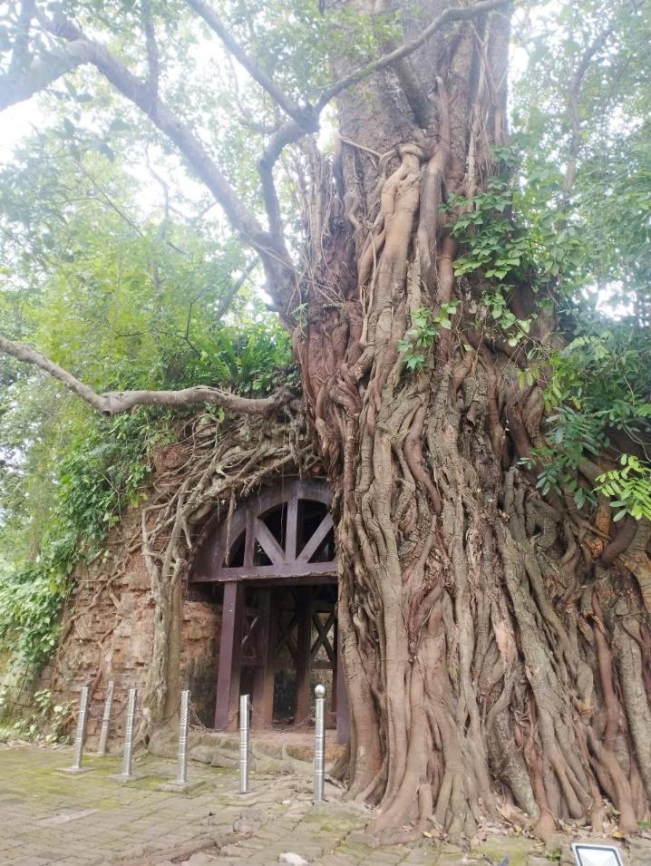
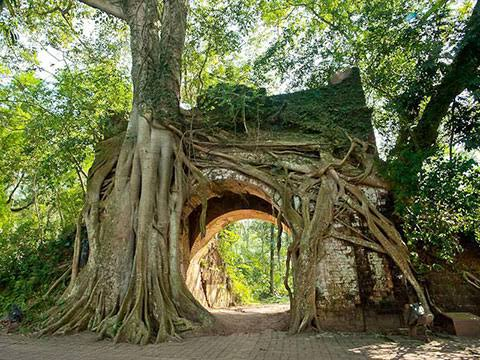
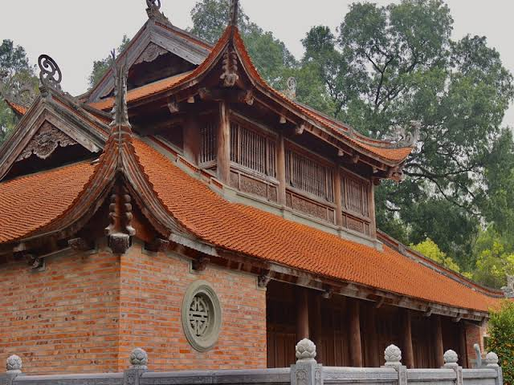
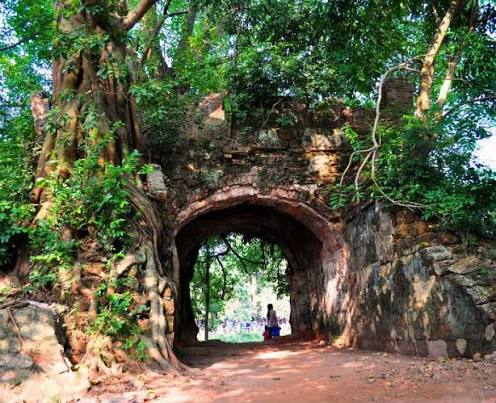

CHẠM VÀO LỊCH SỬ
HÀNH TRÌNH KHÁM PHÁ
Khám phá những công trình kiến trúc tiêu biểu của Thành cổ Sơn Tây
Nằm ở phía Tây Hà Nội, giữa lòng vùng đất Xứ Đoài, Thành cổ Sơn Tây hiện lên với những bức tường đá ong rêu phong, những cổng thành cổ kính và bao câu chuyện lịch sử còn vang vọng.
Hơn 200 năm đã trôi qua, Thành cổ không chỉ là dấu tích của một công trình kiến trúc quân sự xưa mà còn từng gắn với biết bao thăng trầm của lịch sử dân tộc thời kỳ chống thực dân Pháp xâm lược, nơi bảo tồn, lưu giữ những giá trị di sản văn hoá của vùng đất Sơn Tây và của đất nước.

Thành được xây dựng năm 1822, dưới đời vua Minh Mạng, triều Nguyễn. Và được đánh giá là một trong bốn thành có kiến trúc độc đáo và kiên cố nhất lúc đó. Thành Sơn Tây khi xưa được coi như là trung tâm đầu não hành chính của cả vùng xứ Đoài rộng lớn.
Theo sách Đại Nam nhất thống chí có ghi lại: Thành Sơn Tây có chu vi là 1304.8m, cao 4.4m, có 4 cửa, hào dài 1792m, rộng 26.8m, sâu 4m. Diện tích thành nằm ở địa phận 2 xã Thuần Nghệ và Mai Trai (nay thuộc phường Sơn Tây, Hà Nội). Để xây dựng thành, triều đình đã phải huy động tới 2000 quân dưới sự chỉ huy của thống đốc Thập cơ Vũ Văn Thuận, kết hợp cũng phu dân và quân lính sở tại hợp sức xây đắp thành.
Trong khoảng những năm 70 – 80 của thế kỉ XIX, Thành cổ Sơn Tây là một trung tâm phòng bị kháng chiến chống Pháp của nhà Nguyễn, dưới sự lãnh đạo của nhiều nhân vật như Hoàng Kế Viêm, Lưu Vĩnh Phúc, … Cho đến năm 1883, thành thất thủ và được quản lý bởi người Pháp.
Ngày 16/05/1924, Toàn quyền Đông Dương đã ra nghị định xếp hạng di tích thành Sơn Tây và sau đó giao cho trường Viễn Đông Bác Cổ quản lý.
Tháng 12/1946, tại đây đã diễn ra một cuộc họp quan trọng của Chính phủ nước Việt Nam Dân chủ Cộng hoà.
Ngày 15/10/1994, Bộ Văn hoá và Thông tin (nay là Bộ Văn hoá, Thể thao và Du lịch) đã ra quyết định công nhận Thành cổ Sơn Tây là Di tích lịch sử và kiến trúc quốc gia.
Khám phá những công trình kiến trúc tiêu biểu của Thành cổ Sơn Tây
Hãy gửi cảm nhận của bạn cho chúng tôi sau khi tìm hiểu thông tin về Thành cổ Sơn Tây trên website này.
Thiết kế poster/infographic hoặc đề xuất biện pháp, hành động thực tế để góp phần bảo tồn, gìn giữ những di sản, nét đẹp văn hoá và lan toả giá trị tới mọi người.
✨ Mỗi đóng góp của bạn đều đáng quý!




